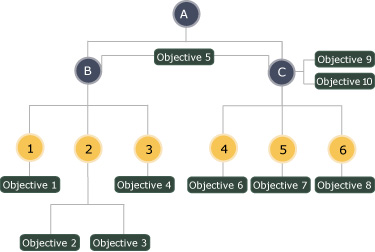

Global vs. Local Objectives

Each activity has its own set of learning objectives defined for it called
“local” objectives. Each activity has these by default, no
explicit association to objectives is needed. The content developer can
associate objectives to activities by defining them in the activity tree
(via the content package manifest). All objectives defined for an activity
(explicitly or by default) are local to the activity. This means that
the activity is aware they exist and only that activity’s SCO can
affect them.
A local activity can be defined as a "global" objective. This global
objective then can be shared with other learning activities. If an objective
is declared to be global (via XML in the content package manifest), then
the tracking model elements associated with the objective are available
to other learning activities that share that same "global" objective.